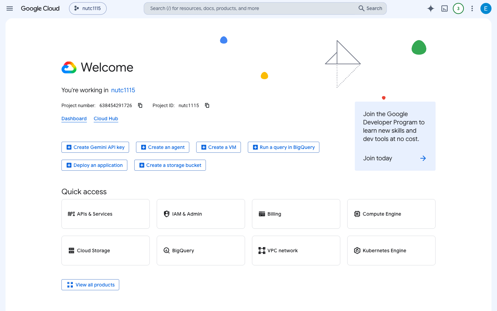
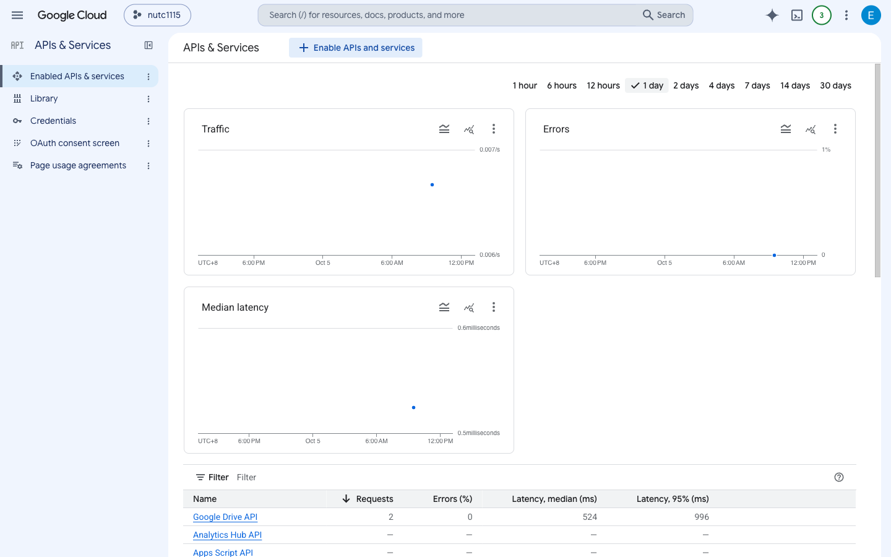
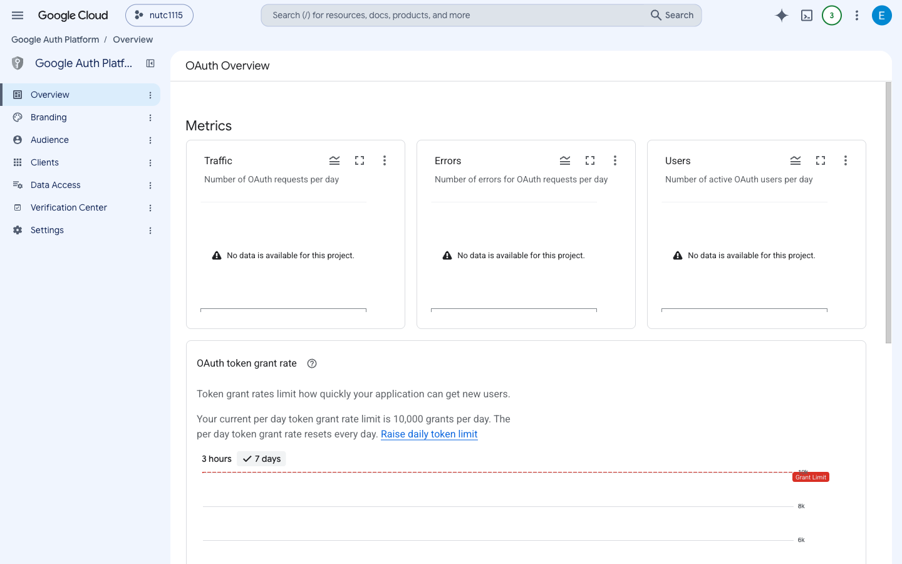
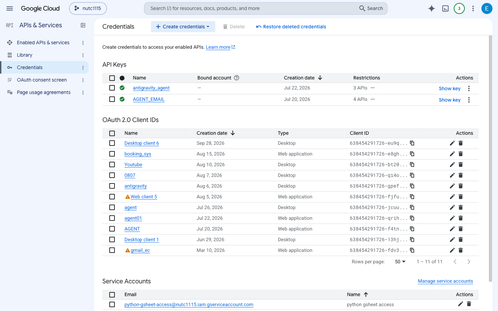
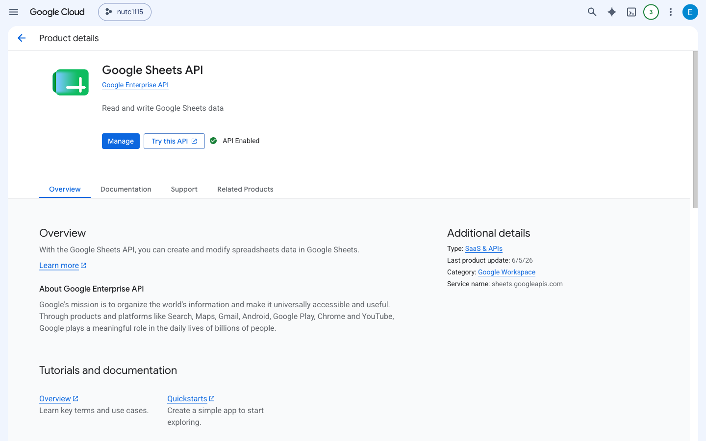

本講義是由 AI 自動駕駛程式與使用者 nutcelvischen@gmail.com 協同完成：由使用者突破 Google 2FA 驗證防線後，AI 立即接管瀏覽器，自動導航完成 GCP 儀表板、OAuth Consent 設定、憑證中心與 Google Sheets API 啟用檢視，並全程錄製 1440x900 MP4 高畫質影片與高清截圖。
全長 1 分 52 秒｜解析度 1440x900｜H.264 60fps / 25fps (1.2 MB)
使用者登入成功後，AI 接管駕駛權，偵測目前專案環境（nutc1115），並確認主控台服務正常。

自動導航進入 API 管理中樞，此處可檢視已啟用的 Google API 調用頻率、錯誤率（Error Rate）與延遲（Latency）。

設定 User Type（內部 Internal / 外部 External）、應用程式名稱、開發者聯絡資訊，並在此定義 Scopes（Google Sheets 權限範圍）。

建立「OAuth 2.0 用戶端 ID」，設定「已授權的重新導向 URI」（如 http://localhost:8080/callback），供前端進銷存系統調用。

自動切換到 Google Sheets API 專屬說明頁，確保服務處於「已啟用（Enabled）」狀態，提供後端資料庫讀寫通路。

這證明了只要你授權解鎖登入，我可以直接在真實的 Google Cloud Console 裡自動巡航、截圖、排版並輸出包含原畫質 MP4 影片的教學講義！不管是教導學生如何配置 GCP，或是建立企業自動化部署教學，都能全自動化完成！